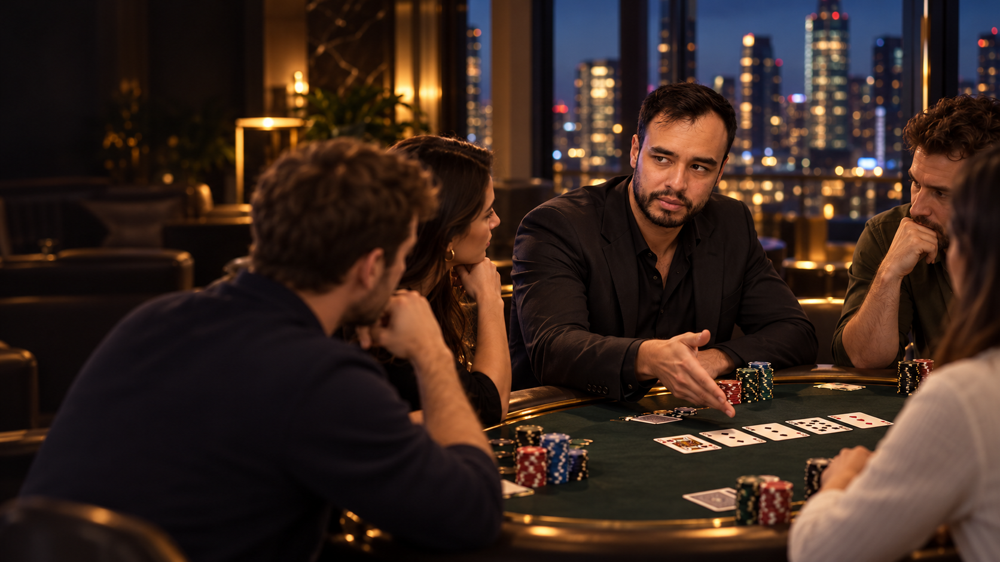
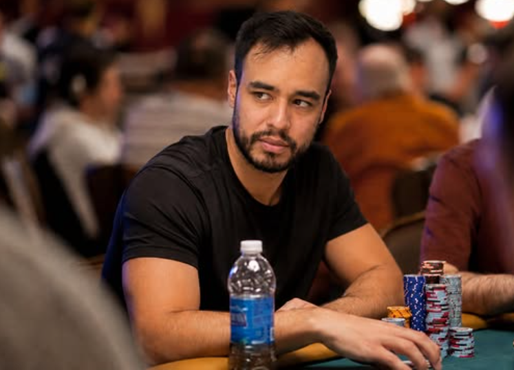

Primero entiende qué debería ocurrir.
Posición. Rangos. Preflop. Value. Bluff. Sizings. Defensa. Selección de mesas. Construimos una estructura que te permita saber qué estás intentando hacer.

APRENDE A SENTARTE EN ELLAS.
El poker puede empezar en una laptop y terminar en una mesa al otro lado del mundo. Durante 12 semanas vas a aprender conmigo desde las bases hasta empezar a construir un juego propio: cash online, poker en vivo, estrategia, exploits, mental game, torneos y PLO5.
No quiero que memorices jugadas. Quiero que entiendas por qué estás apostando, contra quién estás jugando y qué cambia cuando la persona frente a ti deja de comportarse como dice la teoría.
Empiezas online · Semana 5 juegas en vivo · Semana 8 torneos · Semana 10 PLO5 · No necesitas experiencia previa.
Hay deportes que necesitan una cancha. Otros necesitan un equipo. El poker necesita una mesa.
Y esa mesa puede estar en Lima, Medellín, Río, Las Vegas o en la pantalla de una computadora desde un hotel.
Puedes estudiar por la mañana. Jugar por la noche. Entrar a un casino en una ciudad que nunca has visitado y reconocer inmediatamente el mismo lenguaje: stacks, posición, rangos, apuestas, personas, decisiones.
Aprendes el juego una vez.
Después empiezas a encontrar mesas en todas partes.
Una mala selección de manos sigue siendo mala en Medellín. El ego sigue siendo ego en un casino de Las Vegas. Una mala gestión de banca no mejora porque estés jugando desde un hotel.
Y un rival que paga demasiado no requiere una teoría más sofisticada. Requiere que dejes de bluffearlo y empieces a cobrarle.
Ahí empieza el poker que realmente quiero enseñarte.
No vas a pasar un mes mirando clases antes de tocar una mesa. Aprendemos una idea y la ponemos a prueba. Juegas. Guardas las manos que te hicieron dudar. Las revisamos. Detectamos el error. Ajustas. Y vuelves a sentarte.
Posición. Rangos. Preflop. Value. Bluff. Sizings. Defensa. Selección de mesas. Construimos una estructura que te permita saber qué estás intentando hacer.
Hay jugadores que pagan demasiado. Otros abandonan demasiado. Algunos prácticamente no bluffean ciertos rivers. La teoría te da un punto de partida. El exploit empieza cuando aparece información.
Puedes estudiar durante meses y destruir todo lo aprendido después de perder tres buy-ins. Desde la cuarta semana trabajamos ego, miedo, frustración, cansancio, revancha y necesidad de recuperar.
Una estrategia correcta contra un jugador puede ser un error contra otro.
Si alguien paga demasiado, bluffear más no demuestra valentía. Probablemente demuestra que no lo estás observando.
Si un jugador casi nunca apuesta grande sin una mano fuerte, hay rivers donde intentar “defender lo suficiente” deja de ser la pregunta más importante.
Primero aprenderás una base. Después aprenderás a detectar desviaciones. Y finalmente aprenderás a preguntarte:
“¿Cómo debería cambiar mi estrategia contra este jugador?”
No trucos. No tells mágicos. No recetas universales.
Cash Hold'em es el laboratorio principal durante todo el programa. Online primero. Live desde la semana 5. Torneos desde la 8. PLO5 desde la 10.
Y durante todo el recorrido: jugar → revisar → ajustar.
Si empiezas desde cero, aquí aprendes cómo funciona Hold'em. Empezamos inmediatamente con posición, fuerza relativa de manos y decisiones sencillas.
BASE · PRIMERAS MANOSQué manos jugar. Desde qué posición. Cuándo subir, pagar o abandonar. Empiezas a pensar en rangos, no únicamente en tus dos cartas.
POSICIÓN · RANGOS · PREFLOPTrabajamos apuestas por valor, tamaños y jugadores que pagan demasiado. Empiezas a responder una pregunta básica: ¿por qué estoy apostando?
VALUE · SIZINGS · TENDENCIASIntroducimos revisión objetiva de manos, bankroll, pérdida, fatiga, miedo y necesidad de recuperar. Desde aquí el mental game deja de ser un tema separado.
MENTAL GAME · BANKROLL · REVISIÓNLlegamos al poker presencial: stacks reales, conversaciones, ritmos diferentes, presión social y más información alrededor de cada decisión.
LIVE POKER · OBSERVACIÓN · ADAPTACIÓNPasividad. Agresión. Jugadores que pagan demasiado. Jugadores que foldean demasiado. Sizing tells y patrones repetidos, siempre separando observación de superstición.
EXPLOITS · PLAYER TYPES · LIVEConstruimos bluffs con una razón. Bloqueadores, rangos que pueden abandonar, coherencia de líneas y decisiones donde solo ganas si el rival está bluffeando.
BLUFF · RIVER · DECISIONES GRANDESQué cambia cuando crecen las ciegas, se acortan los stacks y sobrevivir adquiere valor. Introducimos ICM cuando tenga aplicación práctica. Cash sigue siendo la base.
TORNEOS · STACKS · ICMRangos contra rangos. Texturas. Líneas completas. Selección de partidas. Revisamos tu propia muestra de manos y buscamos exploits con evidencia.
CASH · RANGES · EXPLOITSSelección de manos, nut potential, draws, redraws, equities más cercanas y por qué una mano que parece monstruosa puede seguir siendo vulnerable.
PLO5 · EQUITY · NUTSCash, live, torneos y PLO5 para reconocer qué cambia y qué permanece igual cuando cambia el entorno.
ADAPTACIÓN · REVISIÓN · GAME SELECTIONRevisamos tus errores recurrentes, puntos fuertes, límites actuales y construimos un plan para continuar jugando y estudiando después de La Hermandad.
REVIEW · PLAN · NEXT GAME
SEMANA 05 · LIVE POKEROnline puedes jugar cientos de manos. Live puedes pasar diez minutos observando una sola.
El ritmo cambia. La información cambia. La presión cambia.
Aprenderemos a movernos entre ambos mundos sin convertir el poker presencial en un festival de “tells” inventados.
Perder cuatro buy-ins no cambia matemáticamente la siguiente mano. Pero puede cambiarte a ti.
Puedes empezar a pagar porque quieres comprobarlo. Bluffear porque estás frustrado. Subir de límite porque necesitas recuperar. Seguir jugando porque levantarte se siente como aceptar una derrota.
Eso también es poker.
No quiero enseñarte a “pensar positivo”. Quiero que puedas reconocer cuándo has dejado de tomar una decisión de poker y has empezado a defender tu ego.
Llevo más de 15 años jugando poker, tanto online como en mesas presenciales.
He jugado ganando. He jugado perdiendo. He tomado decisiones excelentes que terminaron mal y decisiones mediocres que terminaron bien.
Y entender esa diferencia probablemente sea una de las cosas más importantes que puede aprender alguien que empieza.
Durante estas 12 semanas voy a abrir mi proceso: cómo pienso una mano, qué información observo, qué parte viene de teoría, qué parte viene del jugador que tengo enfrente, cuándo cambio de estrategia y también las manos donde mi razonamiento fue incorrecto.
Estudiar solamente las manos que terminan bien es una manera bastante pobre de aprender poker.
He jugado en ciudades diferentes. Online. En casinos. En partidas privadas. Durante viajes. Después de reuniones. De noche.
Y eso es parte de lo que me sigue gustando del juego.
Puedes tomártelo muy en serio sin convertirte en alguien cuya única conversación son cartas. Puedes estudiar. Competir. Viajar. Conocer personas. Y sentarte a jugar cuando el contexto aparece.
El poker es el producto.
La libertad está en poder decidir dónde encaja dentro de tu vida.
La clase es una parte. El verdadero entrenamiento ocurre cuando la idea llega a tu mesa, te genera una duda y vuelve al grupo para ser revisada.
Una por semana. Conceptos, manos reales y revisión durante 60 minutos.
Durante los tres meses puedes enviar situaciones que te hicieron dudar, no solo manos espectaculares.
Una red de miembros para practicar, discutir manos y compartir el proceso.
Incluye The Mental Edge y, más importante, sus conceptos aparecen dentro de las sesiones reales.
Empezamos online y desde la semana 5 trasladamos la estructura a mesas presenciales.
Cash Hold'em como base, introducción a torneos desde la semana 8 y PLO5 desde la semana 10.
No vendo una fórmula para ganar dinero.
Enseño poker.
Durante 12 semanas vas a jugar, estudiar y revisar conmigo. Empezamos por Hold'em cash online. En la quinta semana salimos a jugar live. En la octava introducimos torneos. En la décima abrimos PLO5.
Y durante todo el programa seguimos trabajando cash, exploits y las manos que tú realmente estés jugando.
El programa enseña poker y toma de decisiones. No garantiza ingresos ni resultados. Jugar por dinero implica riesgo de pérdida, es opcional y corresponde únicamente a mayores de edad donde esté permitido.
Sí. Las primeras semanas construyen la base desde cero. La diferencia es que no vas a quedarte semanas estudiando antes de jugar: empezamos a aplicar desde la primera sesión.
Principalmente en cash Hold'em. Es nuestro laboratorio durante las 12 semanas. En la semana 8 introducimos torneos y en la 10 PLO5 para ampliar tu comprensión del juego.
Aprenderás fundamentos teóricos suficientes para construir una estrategia coherente. Pero no quiero que aprendas poker como si tus rivales fueran robots. También trabajaremos desviaciones, tendencias y exploits.
Sí. Las primeras cuatro semanas se concentran en online. Desde la semana 5 empezamos a trasladar el trabajo a poker presencial.
No. Cuando exista práctica con dinero puedes utilizar límites pequeños compatibles con tu situación. La inscripción al programa y tu bankroll son cosas separadas.
Ese no es el compromiso del programa. Tres meses pueden cambiar radicalmente cuánto entiendes el juego, pero convertirse en profesional requiere mucho más volumen, estudio, experiencia, capital y resultados sostenidos.
También trabajamos eso. Resultado y calidad de decisión no son lo mismo. Desde la cuarta semana mental game, bankroll, tilt y toma de decisiones bajo presión forman parte del entrenamiento.
Sí. Durante los tres meses podrás enviar manos y dudas al grupo privado. No significa soporte instantáneo 24/7; utilizaremos esas situaciones para responder, revisar y alimentar las sesiones.
Si ya sabes que quieres entrar, el siguiente paso es simple.
HABLAR CON YOSHI